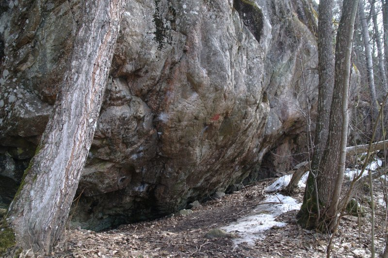

Skevik
Lat: 59.34278
Long: 18.37871
Allmänt
Mycket imponerande och populär klippa med mycket fin sportklättring i graderna 6c-7c+.
Beskrivning
På Ormingelandet, ca 2 mil O om Stockholm, ligger denna mycket imponerande klätterklippa. Jätteblock bildar en effektiv barriär nedanför berget och förklarar varför platsen i folkmun fått namnet Skeviksgrottan. Höga träd och blockterräng i övrigt förstärker detta intryck. Väggpartierna, som är branta och ofta svagt överhängande, når en höjd av 30m och bildar en halvcirkelformad amfiteater av omkring 100 m längd som är vänd mot väst. Klippans karaktär är mestadels sprick- och strukturrik, men med en del kompakta partier. Lösa skivor och block förekommer även om huvuddelen av lederna har fast klippa. Sammantaget innebär detta att utbudet av leder till övervägande del hänför sig till svårighetsgraden 6 och däröver. Det är också dessa som ger den bästa klättringen. Platsen är ett lagskyddat fornminne och besöks framför allt av andra än vi klättrare. Ta hänsyn till detta. Slutligen ett par ord om säkringsmedel. Sedan den artificiella eran sitter ett antal rostiga bultar kvar. De för dock en tynande tillvaro och det är bara en tidsfråga innan de vittrat bort. På de nyare turerna sitter en och annan färsk fix bult och ett numera ganska stort antal borrbultar! Generellt går det bra att förstärka sina säkringar med en uppsättning vajerkilar. Friends förgyller som alltid tillvaron.
Mycket fin sportklättring för den som ligger mellan 6c+ och 7c+. Lätt överhängande med god friktion. Har nyligen fått ett antal nya välbultade leder som
7b och
6c+.
Miljö:
Väst, stora delar skuggiga men bitvis öppet för solen. Klippan torkar relativt fort efter regn.
Vägbeskrivning
<div style="width: 355; float: right; margin-left: 10px; padding: 3px; border: solid 1px #cccccc;">
<googlemap width=350 height=300 lat="59.34278" lon="18.37871" zoom="14" type="map" controls="small">
59.34278,18.37871,
Skevik
</googlemap>
</div>
<div style="float: right; margin-left: 10px;">
<slresa>
titel=Skevik
lat=18378710
long=59342780
</slresa>
</div>
Kör väg 222 mot Gustavsberg. Sväng av vid avfart Norra Lagnö / Skevik. Ta andra vänster in på Lagnövägen, kör tills du kommer ut till en T-korsning. Sväng höger in på Skeviksvägen (riktning Gustavsberg) och ta vänster efter ca 1km vid busshållplats Koviks hagar finns en vägbom. Fortsätt 300 m norrut längs Lagnövägen för att hitta parkering.Följ sen traktorvägen till fots. Ta vänster på ängen och du ser klippan (se bild).
UPPDATERING
Låst bom uppsatt av markägaren pga mycket bil- och skräpdumpning så att parkering är omöjlig på den tidigare parkeringsplatsen. Är grinden öppen och man kör in och parkerar så riskerar man att bli inlåst bakom grinden i en vecka.
Kommer du från Gustavsberg - åk förbi OK-macken, ta vänster på skeviksvägen. Du åker förbi
Gustavsbergs Vattentorn
efter bara 50 meter. Fortsätt ca 2-3 km och ta av höger vid samma busshållplats och lilla skylt.
Leder
Lilla och vänstra väggen
- 4
- Arrêtera
- 6c
- Tung klättring på arêten. Saknar hängare på första bulten.
- 5
- Mylingen
- 6b
- Den vänstra leden på lilla väggen. Är nu ok bultad.
-
- Hål i dig
- 6b
- Den högra leden. Boulder-start sedan lättare.
-
- Café opera
- 6c+
- Lättare om man använder väggen till vänster
- 7
- Hard rock café
- 7a
- Klassiker!
- 8
- Let there be rock
- 7c
- Sva-insteg, sedan överhängande och dynamisk!
-
- Rovdjuret
- 7c+
- Startar med insteget på Faiblesse, sedan vänster och upp. Slutar vid Faiblesses ankaret mitt på väggen.
- 11
- Faiblesse
- 6b+
- Balansig klättring i längst en spricka. Slutar mitt på vägg. Nybultad. Fin!
- 11a
- Vilddjuret
- 8a
- Startar med Faiblesse, upp i diedern och sedan vänster genom överhänget.
-
- Vildmannen
- 8a+
- Kombination Rovdjuret + Vilddjuret
- 11b
- Ingen vinner
- 7c
- Startar med Faiblesse, sedan snett upp åt höger.
-
- Kattresan
- 7b+
- Startar med Ingen vinner, sedan ännu mer åt höger. Fin! Obs! En stor sten känns lös efter högertraversen - var försiktiga!
- 14a
- Guru
- 8-
- Logisk fortsättning på Delphi. Startar mitt på väggen på hylla
- 16
- Knäleden
- 4+
- Startar som Knölleden snett åt höger
- 17
- Levande legender
- 7
- Troligen inte ofta klättrad. Upp till en hylla.
- 18
- I mörkaste Peru
- 6-
- Troligen inte ofta klättrad. Upp till en hylla. Startar bakom en stor lind
- 19
- Spaghettiwesterns fader
- 7-
- Enbart utsteg
- 20
- Rurprapsodi
- 7
- Ev svårare pga lossnade grepp
-
- Insteg
- 6a?
- Bultat gemensamt insteg till {{ledlänk|namn=Puls}} och {{ledlänk|namn=Vrålfinger}}
- 21
- Vrålfinger
- 7a
- Samma insteg som Puls
- 22a
- Puls
- 7c+
- Tung, intensiv, ihållande och känslig - allt en riktigt hård led ska vara!
- 22
- Centralpelaren
- 6a+
- Klassiker som inte är helt lätt. Varning för rostiga pitonger.
- 22b
- Septembersol
- 5+
- Alt. utsteg
Högra väggen
- 23
- Irrbloss
- 7/7+
- Starta med Centralpelaren sedan ut höger
- 23a
- Irrbloss direktsinsteg
- 7
-
-
- Nattsudd
- 7b+
- Balans. Slutar mitt på väggen.
- 24
- Fobi
- 7b+
- 12bb och ett ankare (-08)
- 24a
- Resa till natten ände
- 7a+/7b
- Två första bultarna på Fobi sedan till höger om Fobi och rakt upp. Ankare, kedjan vid toppen.
- 25
- Silicon valley
- 7-
- Superdirettissima med start i vänsterkant av svaplattan. Säkras med 10bb och har försetts med eget ankare. Alla bultar utom en satta -08
- 27
- Magnesia Carbonara
- 6c
- 6 borrbultar, ombultad -08. Kedjorna i ankaret utbytta mot stålringar.
- 28
- Solero
- 5+
- Används med fördel som direktinsteg till {{ledlänk|namn=Syttende mai}} och {{ledlänk|namn=Magnesia Carbonara}}. Förstärkt, -08, med ytterligare en bult på insteget.
-
- Coop
- 6c+
- Samma insteg som Konsum, men viker av vänster mitt på väggen. Övre delen gemensam med Spöksonaten.
-
- Konsum
- 6c
- Samma insteg som Coop. Fin klättring längs arêten.
- 31
- Atlantis
- 7a+
- Lång och ihållande.
- 32
- Spöksonaten
- 6b+
- Sällan klättrad. Övre delen har i princip övertagits av {{ledlänk|namn=Coop}} som i stort sett följer samma sträckning. Nedre delen har också delvis bultats och ingår numera i Luftslottet direkt (om man gör som de flesta och håller vänster om bultarna). Mittpartiet upp till tvärsprickan och vidare upp i den korta, högervända diedern är fortfarande kilsäkrat. Klättras nästan aldrig.
- 33
- Luftslottet
- 6c+
- Hade tidigare en bladbult, men är nu helbultad.
- 33a
- Luftslottet direkt
- 6c+
- Ett alternativ till Icones som klippans uppvärmningsled. Den är en förlängning av Luftslottet som finns med i gamla Stockholmsföraren. Startar uppför det sneda blocket ca 2 meter tills man når första bulten, där går man över från blocket till själva väggen och därefter i stort sett rakt upp emellan Atlantis och Tabu upp till originalleden. Enligt förstabestigaren går leden till höger om bultarna (nära Tabu), men de flesta håller sig på vänster sida. Välsäkrad med 9 bb (-06) och ett ankare med två ringar.
- 34
- Tabu
- 7b
- Lång och ihållande.
-
- Ryska fakulteten
- 7b
- Startar med Tabu, sedan höger genom lilla taket.
- 36
- Megaplus
- 7a+
- Fin men sällan klättrad.
- 37
- Megadans
- 7c
- Megaballt krux! Nya borrbultar -05.
-
- Megautsteg
- 7b+
- Fortsätt rakt upp förbi ankaret på Megadans till klippans topp. Svår och dynamisk väggklättring. 2bb och toppankare.
- 38
- Non stop
- 7b
- Tekniskt fotarbete belönas. Svårare än Tabu. Ihållande i nedre delen och med en liten "sting in the tail" på slutet.
- 39
- Pumpmaskin
- 7a+
- Pumpig :-)
- 41
- Icones
- 6c+
- Fin led som alltid är upptagen!
- 41a
- Bates motel
- 7/7+
- Utstegsvariant till Icones. Går rakt upp genom taket där Icones viker av åt vänster på mitten.
- 43
- Hamlet
- 7a
- Väggklättring till höger om Via Aqua.
- 44
- Snabbare än tiden
- 6c+
- Väggtur th om Hamlet som numera är helbultad. Startar antingen med ''Icones'' insteg eller via ''Spigollo Rosso''. I båda fallen får man göra en mossig travers till ledens första borrbult. Några långa slingor för att undvika repdrag kan vara bra. Sedan teknisk och ihållande väggklättring.
- 45
- Spigollo Rosso
- 5a
- Första delen längs arêten har bultats och försetts med ankare.
Sidoväggen
-
- Verve
- 7C+
- Sittstart med avslut i Reach boys juggar. Repeterad i feb 2008.
-
- Bonden Pavul
- 6
- 2m t v om Böhlstark. Samma standplats som Böhlstark.
-
- NeuroLavemange live
- 6/6+
- sju meter th om Bohlstark vid ett skarpt litet tak
Bouldering

Från höger till vänster:
-
- Svält
- 7B
- Starta i två tydliga undercling.
-
- ?
- 7A
- Det här ser ut som insteget till Böhlstark. Böhlstark ss då kanske...?

-
- Verve
- 7C+
- Sittstart med avslut i Reach boys juggar. Repeterad i feb 2008.
-
- Clarity
- 8B+
- samma Startgrepp som Verve går sedan till höger om Verve.
-
- Diversion
- 7C
- Samma start som 7B nedan och samma slut som Verve.
Sedan finns det längs längs back på vänstra sidan, mittemot "Lilla Väggen":
Kuriosa
I Kvarteret Skatans avsnitt
knuffas den odräglige mullefarbrorn Ernst tragiskt ut för en klippa. Detta sker ungefär vid ankaret till
och Ernst landar hårt i närheten av insteget till
. Det bör dock påpekas att man i verkligheten troligtvis
inte
överlever fallet (i synnerhet inte om det sker med huvudet först), och att man i än mindre utsträckning lär vara i form för att begås av Kåta Gun efteråt. Carpe Diem.
Kulturhistoria: Under 1700-talets mitt användes " grottan " som
gudstjänstlokal för en religös sekt, de sk Skevikarna. Samfundet
bildades av två finska prästsöner Jakob och Erik Eriksson.
De förkastade kyrkans ritualer och blev dömda till landsflykt,
i elva år drev de runt i Europa innan de fann en fristad på gården
Skevik. Enligt traditionen förkunnade de sin lära nere i Skeviksgrottan.
Ur: Grottor i stockholms län.
Kategori:Nacka-Värmdö
Kategori:Stockholm
Kategori:Trad
Kategori:Sport
Kategori:Vertikalt
Kategori:Överhäng
Kategori:Saknar kolumner
Kategori:Saknar lednummer